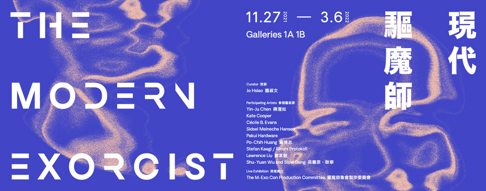

現代驅魔師
2002年，娜塔莎·維塔·莫爾（Natasha Vita-More）在未來學家雷蒙·庫茲維爾（Ray Kurzweil）
的線上論壇網站發表她設計的未來人類身體構造稱之為“普里莫後人”（Primo 3M+）。
這個關於未來人類的設計概念是把我們的壽命無限延長。她宣稱通過生物科技及人工智能將提供我們的身體具備更佳的
擴展性和現代風格。比如，設計客製化大腦（Metabrain）；人類的納米技術結合人工智能建構脊柱通信系統
⋯⋯Primo的設計預示一個可訂製、可變的、可升級的，並且具有感官能力的未來人類原型
未竟之役：太空．家屋．現代主義
本展探究戰後臺灣現代藝術的發展脈絡，及其在此歷史氛圍中所形成之深遠影響
，並向臺灣現代藝術先驅們及其成就致敬。展覽涵蓋本館之重要典藏品與國際藝術家之借件作品。
本館典藏品包括：李元佳、秦松、劉國松、蕭勤、李錫奇、韓湘寧，以及現代主義建築師王大
閎與陳其寛的創作。國際藝術家的借件與相關文獻檔案，包括：當代藝術家
陳麗可（Erika Tan）、蕭崇（Sung Tieu）、谷口瑪麗亞（Maria Taniguchi）、陳瀅如、普拉賈克塔．波特尼斯（Prajakta Potnis）、伊豆見彩、黃慧妍、于一蘭
，以及書寫公廠與新加坡藝術家何敏慧（Joy Ho）和何秀玲（Joanne Ho）等，
進一步闡述「現代」歷史中失語的片段。透過從家居物件至美術館典藏品，
展覽一方面是冷戰時期藝術、設計與科技的交匯，同時亦揭示出「未竟」遺緒，
持續定義著我們對於美好生活及地球家園的想像。